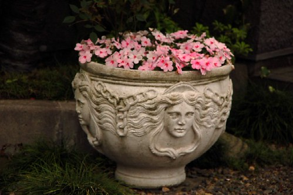
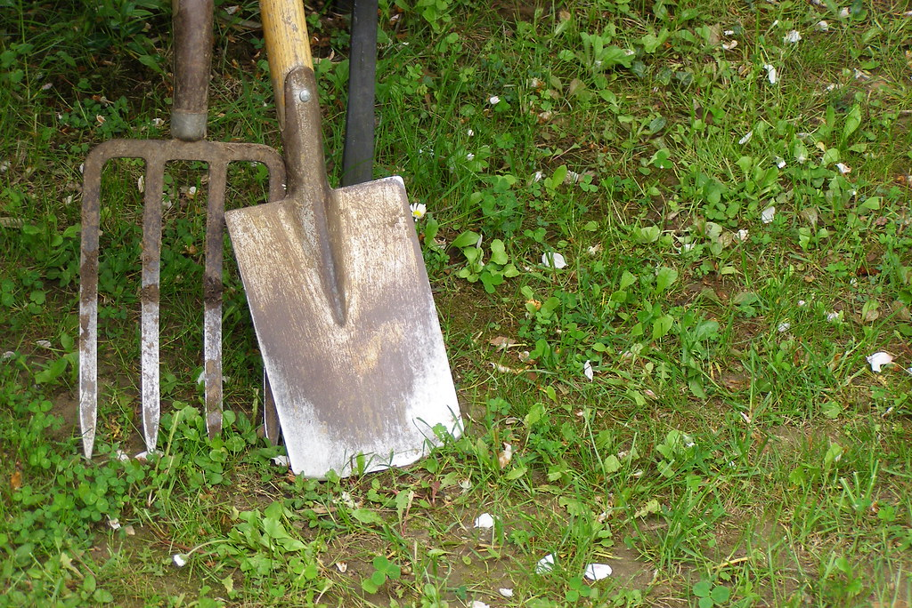
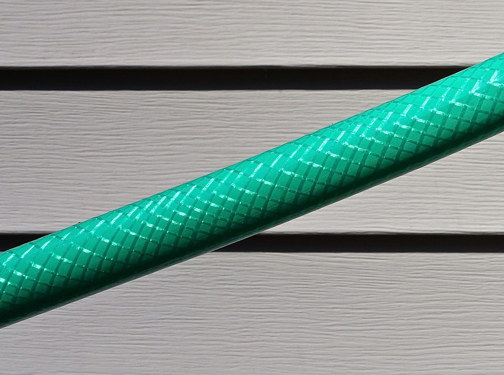

Cultive suas plantas, cuide da sua horta em casa e decore sua varanda ou quintal com ferramentas práticas e vasos encantadores.
Transforme seu cantinho verde. Clique no botão de qualquer item para consultar cores, modelos e disponibilidade!

Vasos de polietileno, cerâmica e plástico reforçado em vários tamanhos e cores, pratinhos anti-dengue e suportes suspensos.

Jogos de ferramentas com pás largas e estreitas, garfos afofadores, tesouras de poda afiadas e arrancadores de raiz.

Mangueiras trançadas resistentes ao sol, esguichos reguláveis com múltiplos jatos, engates rápidos e adaptadores para torneira.
Pulverizadores de compressão prévia e borrifadores manuais para defensivos ou água, regadores plásticos com bico chuveiro.
A equipe da El-Shaday indica os melhores vasos e substratos para o clima de Jequié. Fale conosco agora pelo WhatsApp!
Falar com o Atendimento